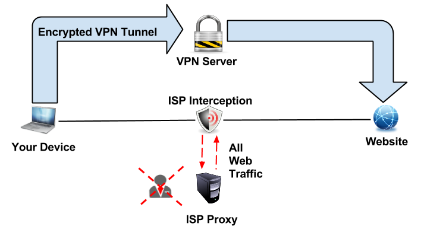

One of the best ways we can remain private is to increase the number of security measures we use such as more complex passwords with a mix of characters or to use antivirus software which enable firewalls and along with that help reduce the amount of Trojans and cookies which are embedded into the hard drive of the computer thus reducing the amount of information these companies can store or retrieve from your personal hard drive.
However a good way to stay private is to use a VPN (Virtual Private Network). A virtual private network extends a private network across a public network enabling a computer to send and receive data across shared or public networks as if it were directly connected to the private network, allowing the users to benefit from the security and protocols of a private network. A key feature of a VPN is its ability to work over both private networks as well as public networks such as the Internet using a method called tunnelling.
VPN's are a form of Wide Area Network and is typically used by business and universities. In the case of universities a VPN allows students to securely access their universities intranet while away from the university campus. Similarly, VPNs can securely make connections to students around the world, creating one cohesive network.
VPN technology can also be used by Internet users to connect to proxy servers for the purpose of protecting personal identity and location. On a side note proxies are similar to VPNs but do not encrypt traffic and they are less secure but work great for browsing the web. The most important thing you need to know about a VPN is that it secures your computer's internet connection to guarantee that all of the data you're sending and receiving is encrypted and secured from prying eyes.
This means that any government agencies won't be able to carry out any Content Surveillance and you will be able to use Search Engines without having your searches logged. Below the picture illustrates a computer with an established VPN below:
